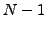

#include <gandalf/common/bit_array.h>
Gandalf bit arrays are a compact representation of binary flags.
They are used both directly and as the foundation of binary images in Gandalf
(see Section 4.4).
They allow compact storage of an array of boolean values.
The architecture of the computer determines how the boolean values are stored,
so for instance on 32 bit machines, the boolean values are packed as 32 values
in a single word.
To create a bit array use the following code:
Gan_BitArray BitArray;
gan_bit_array_form ( &BitArray, 200 );
for an array of 200 bits.
A bit array may be initialised to zero by calling
gan_bit_array_fill ( &BitArray, GAN_FALSE );
or to one (all bits set) by passing GAN_TRUE instead of
GAN_FALSE. To set a bit to one, use
gan_bit_array_set_bit ( &BitArray, pos );
where pos is the bit you want to set, from zero to  for a bit
array of
Gan_Bool bBit;
bBit = gan_bit_array_get_bit ( &BitArray, pos );
Several boolean operations are supported on bit arrays. Given two bit arrays, the operation
gan_bit_array_and_i ( &BitArray1, &BitArray2 );
performs the bitwise AND operation on each bit of the bit arrays, overwriting
BirArray1 with the result. Bitwise OR, exclusive-OR (EOR) and not-AND
(NAND) are also supported, as well as inversion (NOT).
To free a bit array after you have finished using it, call
gan_bit_array_free ( &BitArray );